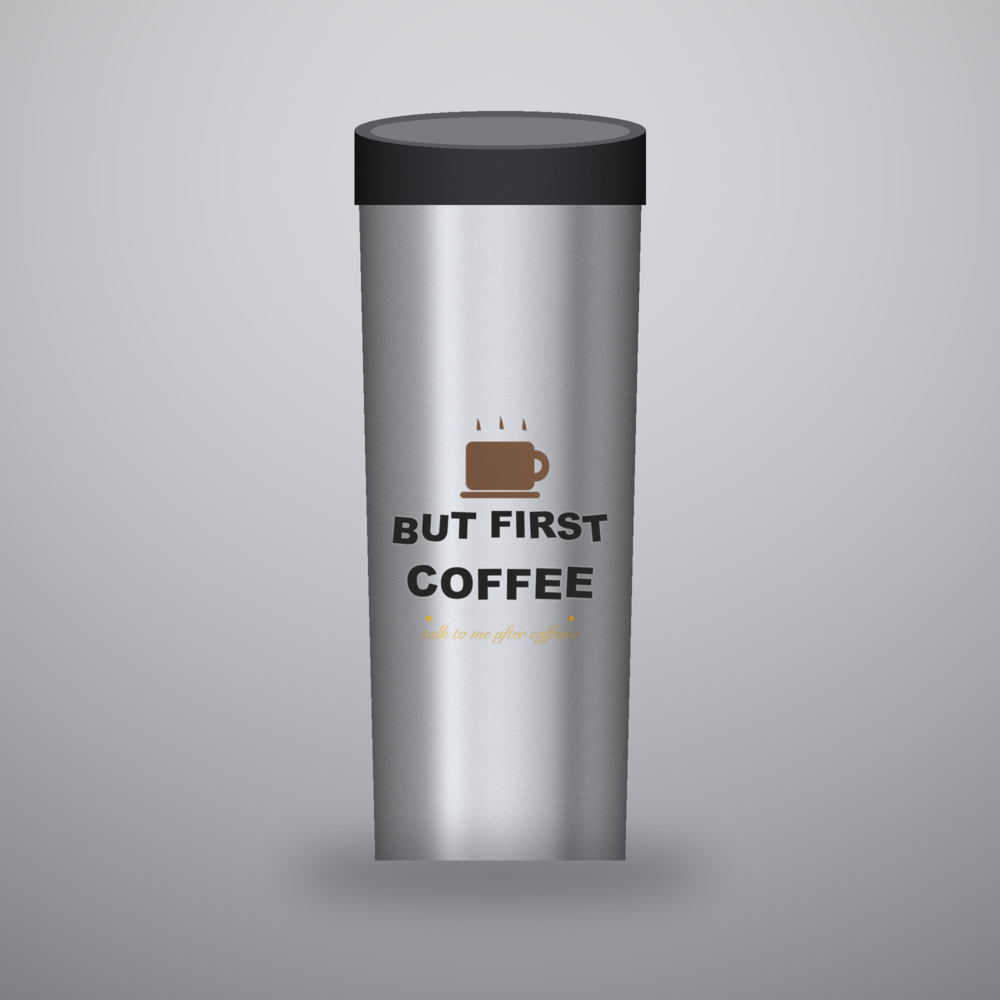

Cricut Tumbler Projects: 8 Cup & Mug Ideas That Actually Survive the Dishwasher

You waited two whole days for that new tumbler. Matched your water bottle, picked the color, cut the decal on the kitchen counter at 11pm because you couldn't wait. Stuck it perfectly, no bubbles, no lift. Then you put it through the dishwasher twice and came back to find your beautiful name decal curling off like a dead sticker slapped on a wet window. Sound familiar?
Every maker has been there. The good news: it was never your fault. It was the vinyl. And once you know which material to grab and how to lay it down, your cup projects will outlast the tumbler itself. Here's the maker-to-maker playbook for Cricut tumbler projects that survive real life.
The One Rule: Permanent Vinyl Only
If you take nothing else from this, take this. Permanent adhesive vinyl is the only vinyl that belongs on drinkware. Removable vinyl is for wall quotes and planner stickers — it lifts, bubbles, and peels the second it sees condensation or a dishwasher cycle. It's not built for it, and no amount of careful application will fix that.
Brands like Oracal 651 or Cricut's permanent vinyl are the go-to for a reason: UV-stable, waterproof, and built to bond to hard surfaces. Don't reach for HTV (heat transfer) on a cup either unless it's glass you're baking in the oven. For stainless, plastic, ceramic, and glass tumblers, permanent vinyl is your move, every time.
Seam Alignment: Start and Stop at the Seam
A full-wrap design on a round tumbler is where most people mess up, because the ends of the wrap don't meet. Always start and stop your design at the cup's seam — the vertical line where the stainless or plastic body is joined. Your apply tape will bridge the gap, but if you try to wrap around a seam you didn't account for, you'll get a puckered jump right where the two edges meet.
Measure the circumference first, then design your wrap about an eighth of an inch shorter than that so the ends tuck cleanly instead of overlapping. Overlap looks like a mistake no matter how straight you cut. Two-decimal math on the seam beats eyeballing a wrap every single time.
Hand-Wash Cards: Your Gift Insurance
If you're making tumblers as gifts, you're handing someone a set of instructions whether you like it or not. Print a small hand-wash card and tuck it inside the cup. Two sentences: "Permanent vinyl decal — hand wash only, no dishwasher, no soaking." That single card saves your gift, your friendship, and your reputation.
Most people don't know the dishwasher will kill a decal. They assume it's the same as the paint printed on the cup. The card isn't bossy — it's the difference between a thank-you text and a confused "your sticker came off" photo three weeks later.
Glitter Vinyl Handling: Strong-Grip Tape, More Pressure
Glitter vinyl is gorgeous and a nightmare to weed, but the real trouble starts at transfer. Skip regular transfer tape — grab strong-grip tape. Glitter's surface doesn't let standard tape bite, so your pieces stick to the tape and drag instead of transferring cleanly.
Burnish harder than you think you should. Glitter is thicker than standard vinyl, so it needs real pressure to seat into the tiny texture of the cup surface. Use a scraping tool and put your weight into it, then pull the transfer tape back at a low angle — slow and low, not up and fast. If a piece still sticks, lay the tape back down, burnish again, and pull from the opposite direction. Grudgingly aggressive wins against glitter every time.
8 Tumbler & Cup Ideas to Cut This Week
Now the fun part. Here are eight projects that make great gifts and move fast on a cutting mat.
| Project | Best Vinyl | Best Surface | Pro Tip |
|---|---|---|---|
| Name tumblers | Permanent vinyl | Stainless | Keep the name short; it reads better wrapped |
| Monogram mugs | Permanent vinyl | Ceramic | Center the monogram on the handle line |
| Hidden-message mugs | Permanent vinyl | Ceramic | Message on the bottom rim for a reveal while drinking |
| Car coasters | Permanent vinyl | Wood or acrylic | Add a cork backing so they don't slide |
| Water bottles | Permanent vinyl | Stainless / Tritan | Size the wrap under the bottle seams |
| Coffee mugs with lids | Permanent vinyl | Ceramic | Decal the lid, not just the body |
| Wine tumblers | Permanent vinyl | Stainless | Keep designs above the base curve |
| Kids cups | Permanent vinyl | Stainless / plastic | Big, bold characters; small details weed badly |
Each of these works off a simple SVG you can cut tonight. If you're looking for ready-made designs instead of building your own, browse the free SVG library for names, monograms, and quote wraps that drop straight into Design Space.
FAQ
Will my vinyl tumbler decal survive the dishwasher?
Realistically, no. Permanent vinyl will withstand hand washing and general handling, but the heat, spray pressure, and detergent of a dishwasher will eventually lift and peel it. Treat any vinyl decal as hand-wash-only. That's why tucking a hand-wash card in gifts matters.
What vinyl should I use for a stainless steel cup?
Permanent adhesive vinyl — Oracal 651 or an equivalent. It bonds to the smooth, slightly curved surface of stainless and handles the condensation from cold drinks. Avoid removable vinyl and standard HTV on stainless drinkware.
How do I fix a seam that overlaps on a wrap?
You can't un-overlap it cleanly once it's down. The fix is prevention: measure the cup's circumference and make the wrap about an eighth of an inch shorter so the ends meet edge-to-edge at the seam instead of stacking. If it's already overlapping badly, peel and recut — it's faster than fighting it.
Does glitter vinyl work on cups?
Yes, but only with strong-grip transfer tape and extra burnishing pressure. Glitter is thicker and textured, so standard tape won't transfer it cleanly and it needs harder pressing to seat. Keep the design simple — glitter weeding on tiny details is a patience killer.
Do I need a sealant over my tumbler decal?
Not for vinyl decals. The safe, non-toxic mod podge or epoxy you see on tumblers is for sublimation and glitter infusible-ink transfers, not permanent vinyl. Your vinyl is already waterproof — a sealant over it will just haze or peel. Skip it and hand wash.
Ready to cut something tonight? Grab a free tumbler and cup SVG to get started, or shop the full project library for names, monograms, and wrap designs that weed clean and last.
🛒 Recommended Cricut Materials for This Project
- Permanent Adhesive Vinyl (Mugs, Signs, Tumblers): Oracal 651 Glossy & Matte Permanent Vinyl Multipack
- Heat Transfer Vinyl (T-Shirts & Tote Bags): Siser EasyWeed HTV Roll (Warm Peel, CPSIA Certified)
- Transfer Tape & Tools: HTVRONT Medium-Tack Clear Transfer Tape + XL Scraper
- Heavyweight Cardstock (Toppers & Keepsakes): 100lb Smooth Core Cardstock Variety Pack
Grab the Free 8-Design SVG Starter Pack + Cut Settings PDF
Want cut-ready files to practice this tutorial? Enter your email to unlock the Starter Pack ZIP immediately.
⬇️ Download Free Starter Pack (.ZIP)